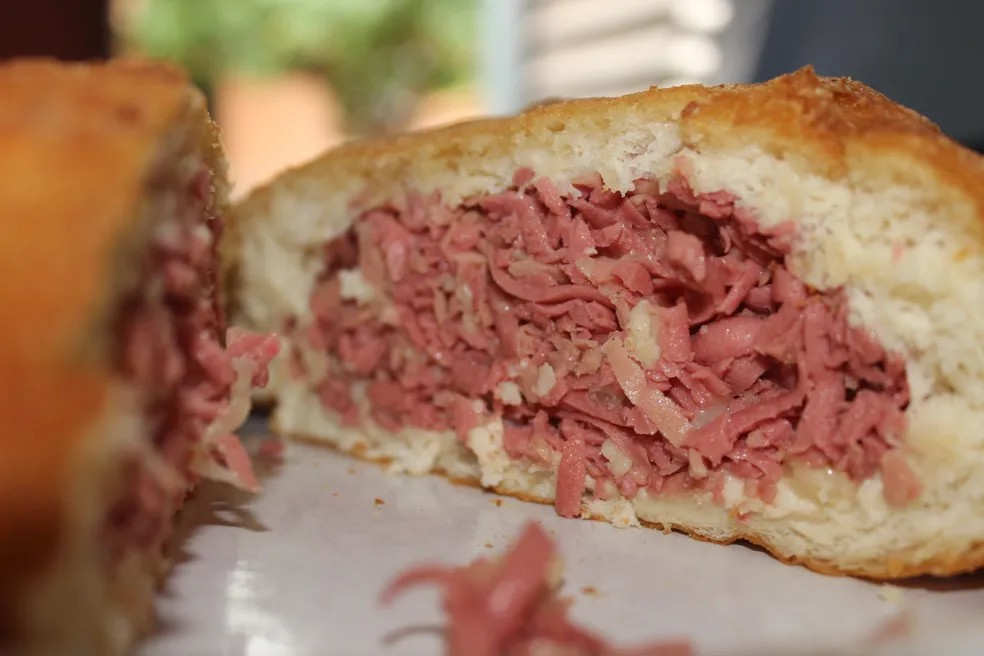

Bomba
A "bomba" salgada é um prato típico do Piauí, popular em Teresina, e sua origem remonta à década de 1980. A história conta que o salgado surgiu a partir da reutilização de sobras de massa de esfirra, que eram recheadas com queijo e presunto e fritas.
VEJA MAIS +